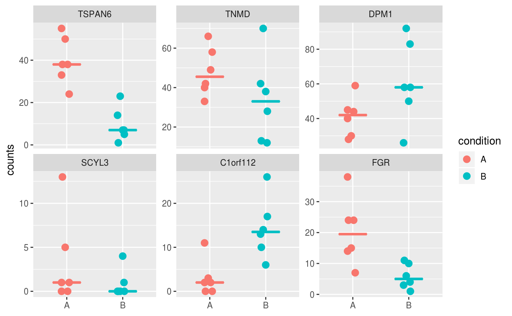
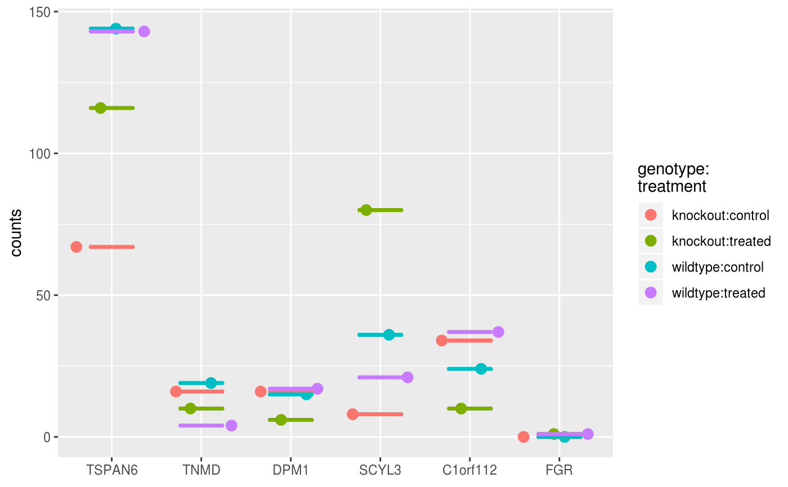

Plot gene expression
# S4 method for SummarizedExperiment plotGene(object, genes, assay = 1L, interestingGroups = NULL, countsAxisLabel = "counts", medianLine = TRUE, color = getOption("basejump.discrete.color", NULL), legend = getOption("basejump.legend", TRUE), style = c("facet", "wide"))
| object | Object. |
|---|---|
| genes |
|
| assay |
|
| interestingGroups |
|
| countsAxisLabel |
|
| medianLine |
|
| color |
To set the discrete color palette globally, use: options(basejump.color.discrete = ggplot2::scale_color_viridis_d()) |
| legend |
|
| style |
|
| ... | Additional arguments. |
style = "facet": ggplot grouped by sampleName, with
ggplot2::facet_wrap applied to panel the samples.
style = "wide": ggplot in wide format, with genes on the x-axis.
#> [1] "gene001" "gene002" "gene003" "gene004" "gene005" "gene006"#> [1] "ENSG00000000003" "ENSG00000000005" "ENSG00000000419" "ENSG00000000457" #> [5] "ENSG00000000460" "ENSG00000000938"#> [1] "TSPAN6" "TNMD" "DPM1" "SCYL3" "C1orf112" "FGR"## Rownames, gene IDs, and gene names (symbols) are supported. plotGene(object, genes = geneIDs, style = "facet")plotGene(object, genes = geneNames, style = "wide")